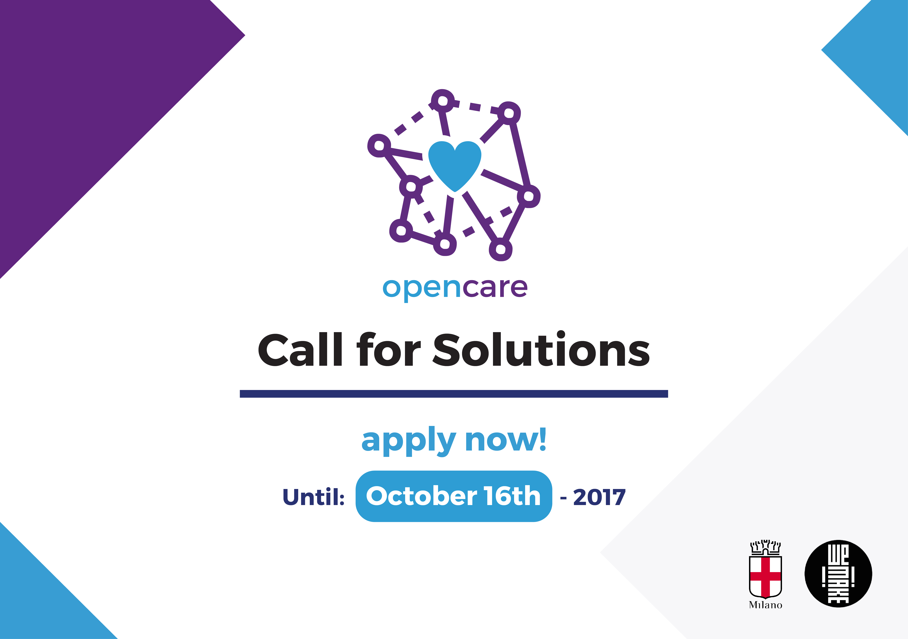

We are happy to invite you to join our opencare final Conference taking place in Milan on 22nd and 23rd of November.
We’ll discuss what are the new models for community care and how are they gaining ground thanks to digital technologies? What urban or organizational conditions can facilitate the spread of open and collaborative care systems? What is the role of new digital manufacturing players in processes of social innovation and care?
The conclusion of the European project OpenCare is a real chance to tackle these themes with both local and global communities, with researchers, key international experts and policy makers.

The conference will also host a showcase for the public projects selected by the Call for solutions: Open innovation for community care.
Deadline for applications to the call has been postponed to 16th October 2017.
This project has received funding from the European Union’s Horizon 2020 research and innovation programme under grant agreement No 688670